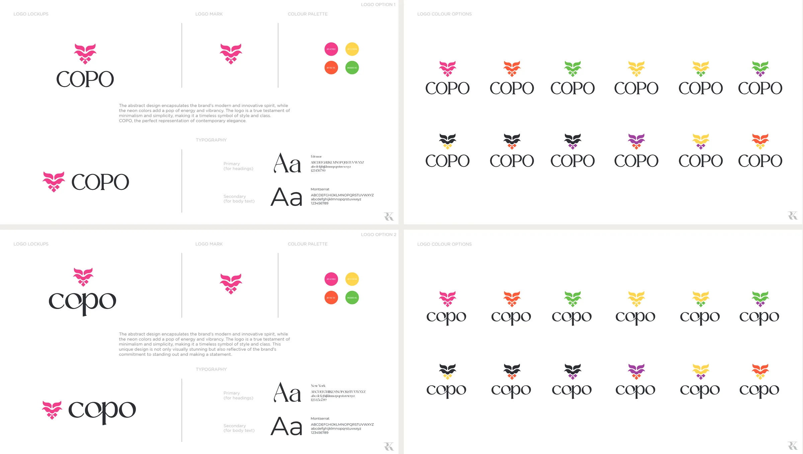
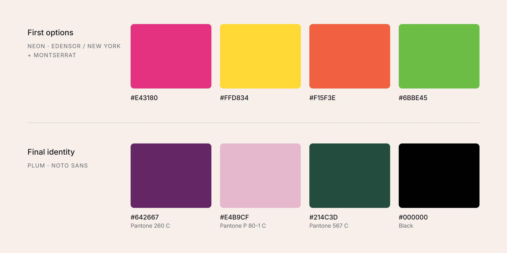
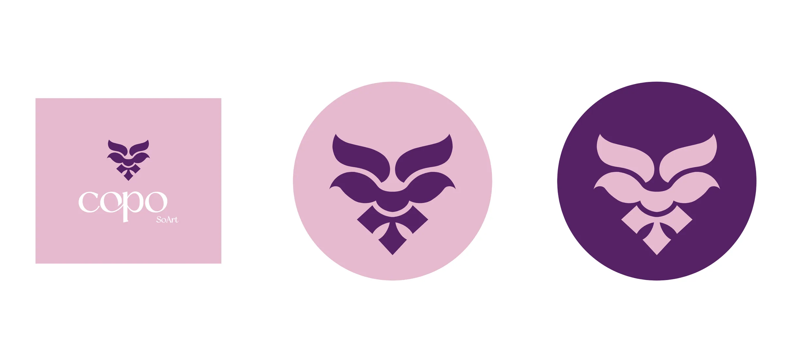
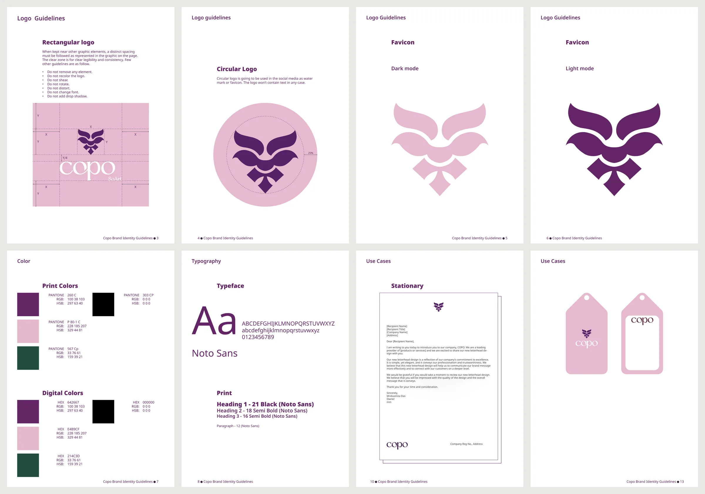
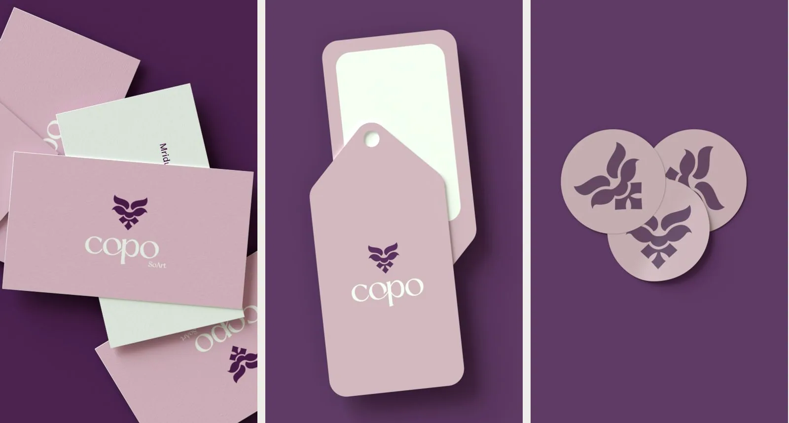
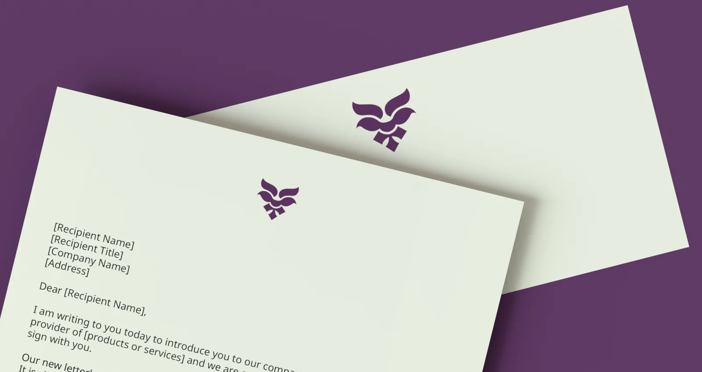
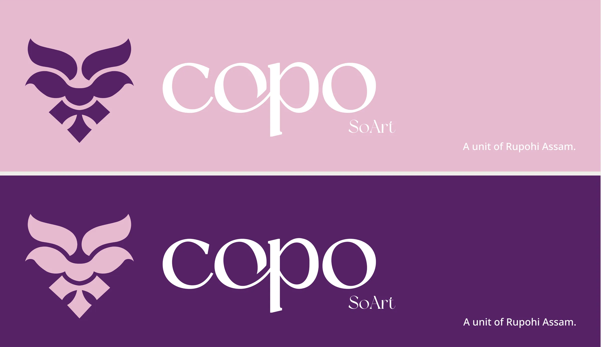

COPO — an identity drawn from the Kopou flower
Brand identity for Copo – so art, an online label selling handloom and handcrafted goods from Assam: the mark, the colour and type system, a logo manual, and every printed piece, rendered in 3D.

The Brief
Copo – so art, a unit of Rupohi Assam, sells handloom sarees, stoles, cushions, runners and artisanal handicrafts online. It needed an identity that could carry Assam's craft heritage to a younger, online audience without turning into a heritage cliché.
Scope: the logo, its colour and type system, a logo manual, and printed collateral (visiting cards, letterhead, envelopes, tags, stickers, banners). The website was handled separately by the client.
The name, and the flower behind it
COPO comes from the Assamese word kopou, the foxtail orchid. It blooms with Bohag, the Assamese spring. Women dancing at Bohag Bihu, the Assamese New Year, wear it in their hair, and it runs through the songs of the season.
Just as the Kopou stands tall in Assamese culture, the COPO logo reflects the elegant, long cylindrical bloom.
Two loud options
The first two options paired the mark with a neon palette of hot pink, yellow, orange and green for energy, with Edensor or New York for headings and Montserrat for text.

Option boards: lockups, the mark, the palette and type, and the wordmark tried in every colour of the neon range.
The turn to plum
The final identity dropped neon for shades of purple, chosen to bring out a feeling of elegance and luxury: a deep plum, a soft pink, a forest green and black. Noto Sans took over from the display faces, with one type scale for print and another for screens.

The neon options against the final palette, with the Pantone references used for print.
The Mark
A rectangular lockup for print. The mark alone inside a circle for social media and as a watermark, and the circular version never carries text. Favicons are drawn separately for dark and light backgrounds.

Logo Manual
A 14-page manual so the identity holds up in other people's hands. It covers clear space and a list of don'ts (no recolouring, shearing, rotating, distorting, changing the font or adding shadows), print and digital colour values, type scales for print and screen, and the logo applied to stationery, cards, envelopes, tags and social media.

Clear space, circular logo, favicons for dark and light, colour, typeface, stationery, tags.
In Use
Every printed piece was modelled and rendered in Cinema 4D.

Visiting cards, product tags and stickers.

Letterhead and envelope.

Banner lockups in pink and plum, carrying the parent brand line.
The logo, colour and type system, logo manual, collateral and Cinema 4D mockups are mine. The website at thecopo.in is the client's own Shopify setup; I recommended a redesign, and the client chose to keep it.